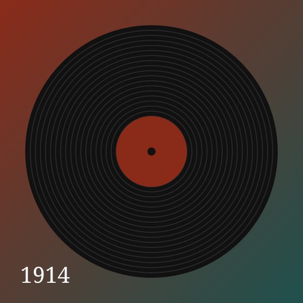

Sayyid Darwīsh, “Istaʿgibū yā Afandiyya” (1914-listed; 78 rpm issue unresolved)

Background: This is a particularly valuable non-Anglophone lead because the text itself—not just the title—describes an economic grievance: kerosene price inflation, black-market selling, shortages, and the presence of police officials. It may fit collective grievance and accusation better than revenge or personal retaliation. It also records a specific urban experience of scarcity and price exploitation around the First World War.
Proposed role: Economic grievance / public accusation / social protest